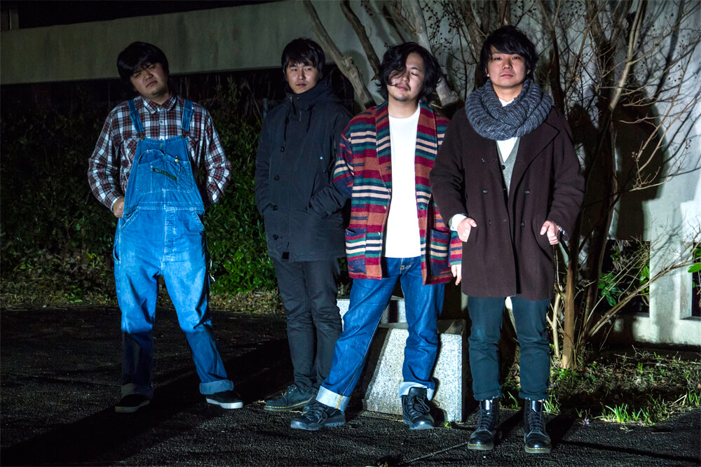

Biography
2016
- 5月
- Vo.立松渉(exモヒカンハイジ)とGt.コウタ(MATTEKUDASAI)によるユニットでアコースティックライブ活動を開始
- 10月
- Ba.たつを(exモヒカンハイジ)を迎えバンド形態での初ライブ
- 12月
- ドラマーにタツオDX(ex Gypsy Morning)が加入し現在の形態での初ライブ
2017
- 10月
- 制作活動をメインにライブ等の活動を開始
2018
- 3月
- 初シングル「感情は流れていく」を会場限定販売開始
同時にタイアップショートムービー「狂気と春と旅立ち」を発表
- 8月
- 2ndシングル「８月」を会場限定販売開始
同時にタイアップショートムービー「夏が満ちて去るように」、「８月」PVを発表
- 11月
- 3rdシングル「だから昼まで」をiTunes Store,Apple Music,Google Play等で配信限定発表。
2019
- 2月
- 1st mini album「スターターパック」を会場限定販売開始
同時にオリジナルＭＶ「四季より速く」を発表。
音楽と映像による新しいライブの空間を創造し、見るものを引き込む世界観とパフォーマンスでシーンを作り上げていく
L→R
Dr.タツオDX
Ba.たつを
Gt.コウタ
Vo.立松渉
